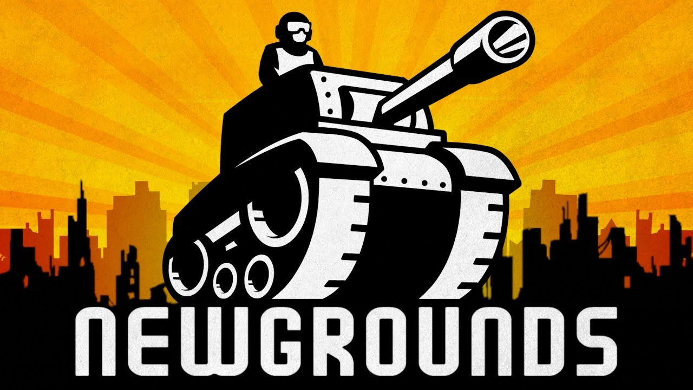
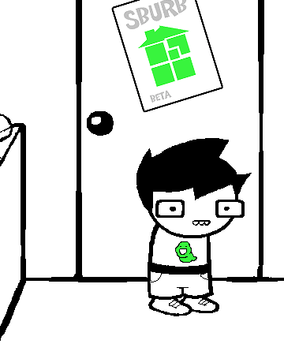

Newgrounds is an online entertainment website and company. It hosts user-generated content such as games, films, audio and artwork composition in four respective website categories. Newgrounds provides visitor-driven voting and ranking of user-generated submissions

Homestuck
Goal: A tale about a boy and his friends and a game they play together. On his 13th birthday, John Egbert starts playing a mysterious videogame called Sburb. Unfortunately, this triggers the apocalypse. Fortunately, he and his friends can make things right—if they can beat the game. They’ll need a lot of teamwork, a little luck, and some inspired shenanigans along the way to make it through this mind-bending, genre-defying adventure.
